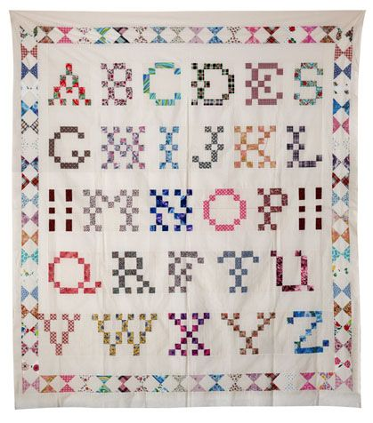
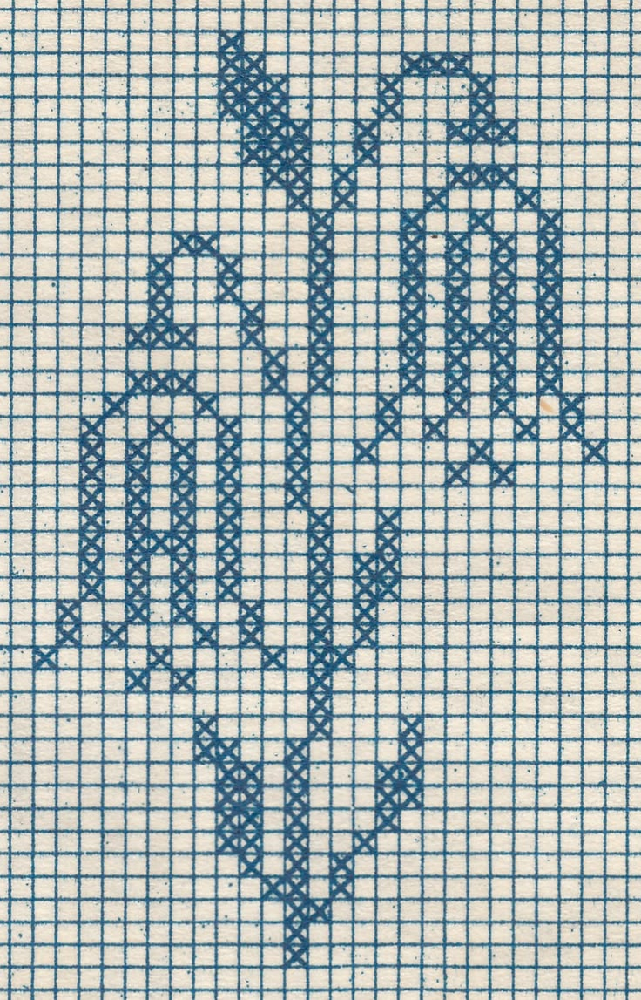
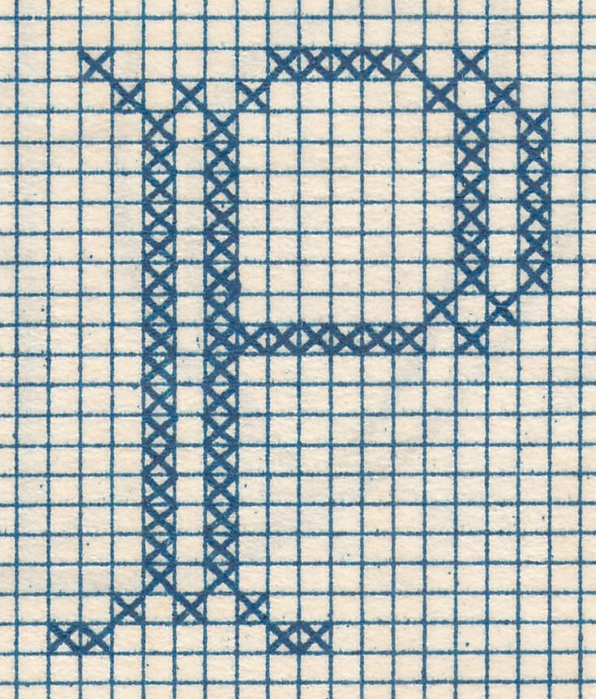

How it works
Draw a doodle or upload a picture, and the grid on the right turns it into a pieced quilt pattern: a fabric list, cutting sizes, yardage, and a row-by-row piecing guide.
- Pick Draw or Upload in the input window.
- Set how many blocks across/down you want, how many fabrics (colors) to use, and your finished block size.
- The pattern updates as you go — or hit Make my quilt to force a refresh.
- Switch to Pattern chart for a numbered, symbol-keyed chart you can print or follow while piecing.
Drawing tools
- Pencil
- Freehand drawing. Keep your lines at least as thick as one grid square, or they can get lost during conversion.
- Block
- Fills one whole grid square per click — the most reliable way to get crisp, gap-free results. Drag to fill a run of squares; right-click to erase a square.
- Eraser
- Freehand erasing, same as the pencil but paints with the background color.
- Line
- Hold Shift while dragging to snap the line to 45°.
- Rectangle
- Hold Shift while dragging to constrain it to a square.
- Ellipse
- Hold Shift while dragging to constrain it to a circle.
- Paint bucket
- Flood-fills a connected area with the current color.
- Eyedropper
- Picks up a color already on the canvas.
- Undo
- Steps back one stroke at a time — also works with Ctrl/Cmd+Z.
Tips for a clean pattern
Project ideas
Not sure what to make? Here are a few starting points.
Split your grid into sections — a simple 2×2, a 3×3, or a looser scatter — and draw a different small motif in each one. It's a forgiving way to fill a bigger quilt without committing to a single design, and a great way to work through a mixed scrap stash.
A block doesn't have to stand alone: piece one letter, number, or small motif per block and set several side by side to spell a word or build a larger repeating pattern. Set Blocks across/down to 12 with a 1″ Finished block size and you'll get a tidy 12″ quilt block — or scale the grid down for something you can piece in an afternoon, or up for extra detail.

Charted cross-stitch and filet-crochet patterns are already gridded, high-contrast designs, which makes them translate beautifully into pixel quilt blocks — monogram alphabets especially, for a quick, personalized gift.

